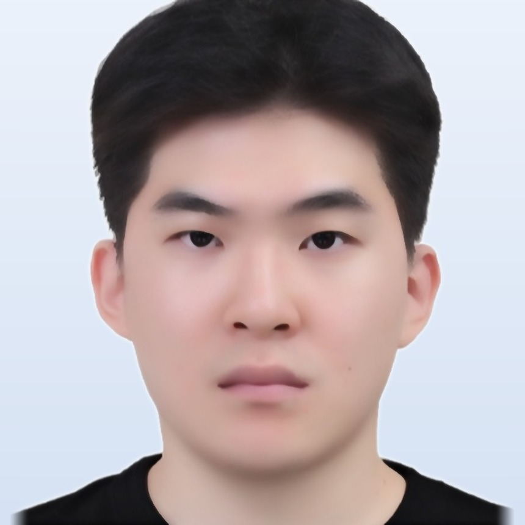
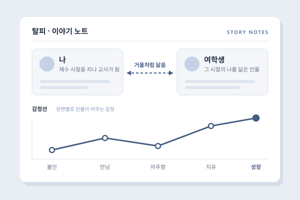
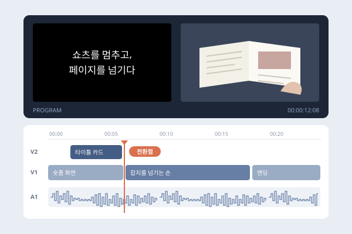
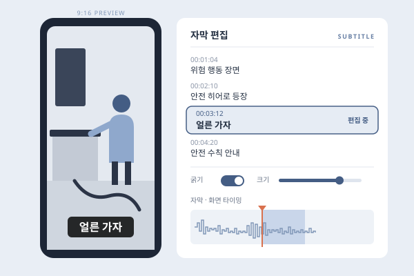

EDITING APPROACH이야기 → 장면 → 감정
FILM & VIDEO EDITING한 컷의 선택이 만드는 이야기의 리듬
01 / ABOUT ME
컷과 컷 사이에서,
이야기의 의미를 찾습니다.
편집은 장면을 연결하고, 그 안의 감정을 관객에게 전하는 일이라고 생각합니다.
단편 영상과 공모전, 출판·미디어 기획 작업을 통해 이야기를 시각적으로 표현하는 방법을 탐색하고 있습니다. 장면의 흐름과 감정의 호흡을 살려, 끝까지 몰입할 수 있는 영상을 만들고자 합니다.
SELECTED HIGHLIGHTS
핵심 성과 한눈에 보기
작업을 통해 얻은 결과와 성과를 먼저 확인할 수 있도록 정리했습니다.
02 / EDUCATION & ACHIEVEMENTS
학력 및 자격증
학력과 수상, 자격 취득 내역을 연도순으로 정리했습니다.
2024
학력 2026
수상 제4회 휘슬러영화제 작품 수상
〈어제의 나에게〉
수상 출판콘텐츠공모전 잡지 장려상
자격증 그림책창작전문지도사 2급 취득
수상 출판콘텐츠공모전 잡지 단체 최우수상
2027
학력 · 예정 서일대학교 졸업 예정
03 / SELECTED WORKS
이야기를 담은 작업들
단편 영상부터 출판 콘텐츠까지, 각 작업의 이미지와 기획 의도를 소개합니다.
04 / EDITING PROCESS
서사를 편집하는 과정
직접 편집한 영상의 장면으로, 기획 의도를 읽고 흐름을 구성한 뒤 화면과 소리를 다듬는 과정을 소개합니다.

01 / STORY이야기 읽기
단편 영상 〈탈피〉재수 시절의 불안함을 간직한 채 교사가 된 ‘나’와, 그 시절의 나를 꼭 닮은 여학생의 이야기입니다. 편집에 들어가기 전, 두 인물이 거울처럼 닮아 있다는 점을 영상의 중심으로 정리했습니다.
장면마다 인물이 머무는 감정을 짚어 보며, 과거의 상처를 치유하고 성장으로 나아가는 감정선이 끝까지 이어지도록 편집의 방향을 세웠습니다.

02 / SEQUENCE흐름 만들기
잡지 공모전 영상숏폼에 익숙한 일상에서 벗어나 종이 매체의 결을 느끼는 순간을 담은 작품입니다. ‘쇼츠를 멈추고, 페이지를 넘기다’라는 검은 화면의 타이틀로 빠른 흐름을 한 번 끊었습니다.
이어서 잡지를 넘기는 손의 장면을 배치해, 디지털 화면에서 종이로 넘어가는 순간이 영상의 전환점이 되도록 장면의 순서와 호흡을 구성했습니다.

03 / DETAIL감정 다듬기
시민안전공모전 영상학교 안에서 흔히 일어나는 안전 불감증 상황을 유쾌하게 짚는 공익 캠페인 영상입니다. 세로형 화면에서도 한눈에 읽히도록 굵고 큰 자막으로 대사의 리듬을 살렸습니다.
‘안전 히어로’가 위험 행동을 재치 있게 막는 순간에 자막과 화면의 타이밍을 맞춰, 메시지가 무겁지 않고 친근하게 전달되도록 다듬었습니다.
05 / CREATIVE TOOLS
이야기를 구현하는 도구
영상 편집에 활용하는 제작 도구입니다.
영상 편집
Premiere Pro
컷의 흐름과 장면의 리듬모션·그래픽
After Effects
움직임으로 더하는 표현이미지·편집 디자인
Photoshop · Illustrator · InDesign
영상과 출판을 잇는 시각 언어06 / CONTACT
함께 만들 이야기를
기다립니다.
영상 편집과 콘텐츠 작업에 관한 이야기를 나눠 주세요.
EMAIL ADDRESSthsgpwn5565@naver.com